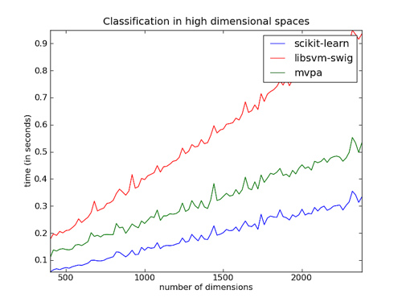
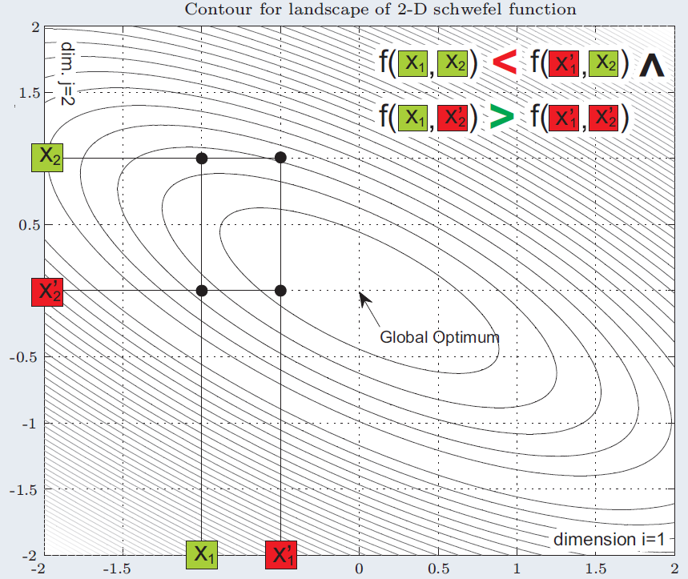

Evol. Comp. CUDA Robotics Course
-
I started this project while assisting at the CEC Special Session on Large-Scale Global Optimization. I tracked the developing tendency of benchmark function sets proposed by the Special Session, a session where different numerical optimization algorithms are compared based on benchmarks for large-scale problems. Based on a study of the benchmark functions used in the special session, I am developing a more general benchmark model which is even closer to real-world numerical problems.
- I took a deep look at the contributions from the competition participants. Based on this study, I am extending our CCVIL algorithm (published at PPSN).
- I am conducting a comprehensive study on Epistasis, Linkage, Separability and the NK landscape. Epistasis is the phenomenon that the effects of one gene can be modified by one or several other genes. Linkage is used to demonstrate the interdependence between several genes in binary solution representations used in optimization algorithms. The NK-landscape is a tunable model for simulating different degrees of epistasis.
- In order to manage the reference papers, I set up a bibliography database with the assistance of JabRef. Since each reference paper is a BibTex entry, I export my database on the website (http://mail.ustc.edu.cn/~chenwx/bib.html) and synchronise it frequently.
- To measure the runtime of the different parallel implementations of a certain sequential algorithm, capture the rule of suitable parallelizing approach
- To compare the scalability of both the sequential and the parallel algorithms
- Create table command
- Load table command, which is used for displaying all contents in the table.
- User-defined integrity constraint support
- Basic grammar checking and error reporting
- Delete, Add and Update operation support
- Which (category of) approach is the fastest for the given problem?
- What happens if the size of the problem scales up?
1. Evolutionary Computation
2010.8 ~ Present Study on the most state-of-the-art algorithms on large-scale global optimization Supervisor: Dr.-Ing. Thomas Weise, Prof. Ke Tang Description:
2010.7 ~ 2010.8 Study on Epistasis, Linkage and the NK landscape Supervisor: Dr.-Ing. Thomas Weise Description:
2010.3 ~ 2010.4 Exploration on Variable Learning Mechanism in Cooperative Coevolution (CC) Supervisor: Dr. Zhenyu Yang, Dr.-Ing. Thomas Weise, Prof. Ke Tang Description: Motivated by the study on (r)JADE, a variant of Differential Evolution (DE), I embedded a Variable Interaction Learning (VIL) mechanism into Cooperative Coevolution. After a long period of theoretical analysis and experimental study, I found an applicable approach for combining between CC and VIL. This work is published as academic paper, and presented at PPSN’2010.
2010.1 ~ 2010.2 Study on JADE and its variant rJADE Supervisor: Fei Peng, Dr. Zhenyu Yang Description: I conducted a study and assessed the scalability of JADE and rJADE when the dimensions of problems scale up to 1000. It turned out that (r)JADE works well in non-separable functions, but performs relatively poor in separable function, due to the slow convergence speed.
2. GPU-based parallel computation
2009.7 ~ 2008.8 GPU Computing with CUDA Supervisor: Prof. Ke Tang Description: CUDA (Compute Unified Device Architecture) is a parallel computing architecture developed by NVIDIA. In this project, I configured the development environment, implemented several fundamental algorithms and ran systematic experiments. The main focus of my study is: It turned out that GPUs are powerful on computing-intensive tasks and large-scale problems.
3. Robotics
2008.7 ~ 2008.9 Robogame 2008 Competition Supervisor: Prof. Hui Li Description: I led a team of four freshmen to take part in the Robogame 2008, where most participants are second-year students. The main goal of the competition was to design and implement a fighting robot. The project can be roughly divided into three parts: programming, mechanics and circuits. I was responsible for the programming and played a lead role in mechanical design. We employed the ATMEL MEGA16/32 as the central controller chip and programed the robot in C. We won the only Best Technical Award. As a result of this award, I received an A+ in the “Undergraduate Research Program”.
4. General projects in courses
2010.6 ~ 2010.7 Implementation of a JAVA-like compiler’s back-end Supervisor: Prof. Yiyun Chen Description: For the course “Compiler Technqiuques”, I implemented the back-end, i.e., the module that translates the intermediate representation into executable assembly code, of a JAVA-like high-level language compiler. This software cooperated with the front-end, i.e., the module that interprets the given high-level language to the intermediate representation, developed one of my classmates and together we constructed a complete compiler. 2010.5 ~ 2010.6 Implementation of Simple SQL database language Supervisor: Prof. Lihua Yue Description: In the course named “Introduction to Database System”, I implemented a prototype of the database manipulating language, as a subset of SQL used in the MySQL DMBS. The prototype includes the following features:
2010.2 ~ 2010.3 Solving binary classification problems with Neural Networks, an empirical study on the impact of the different configurations Supervisor: Prof. Enhong Chen Description: With the assistance of MATLAB, I analysed the impact of different parameter configurations and various algorithms on the performance in binary classification problems. Finally, I employed the AUC (Area Under the Curve) metric to evaluate and analyse the outcome of each combination of configurations. 2009.11 ~ 2009.12 Empirical Study on the Fastest Approach to find one feasible solution of the N-Queen Problem Supervisor: Prof. Enhong Chen Description: In this course project, I implemented eight distinct approaches to find one feasible solution for the N-queen problem. There are two aspects that I explored in this project: